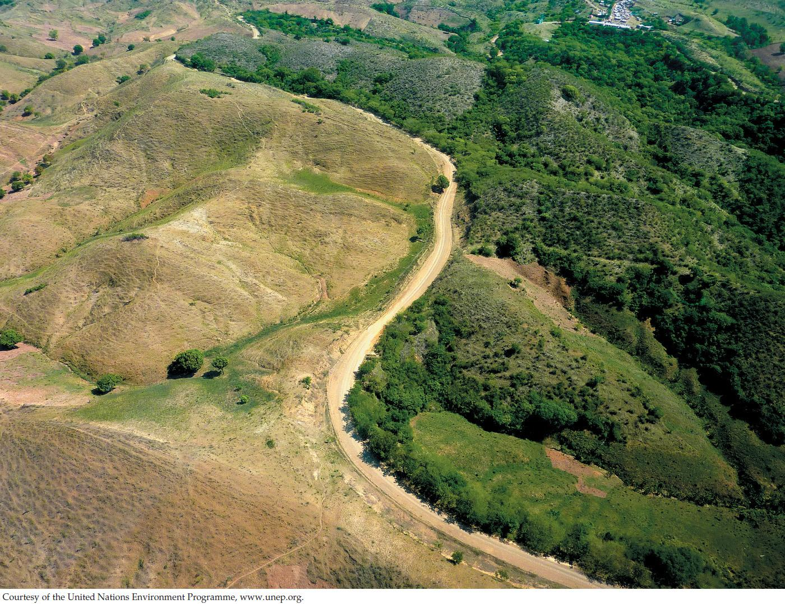

| 25 | Plant Nutrition and Transport |
|

An aerial view of the border between Haiti (left) and the Dominican Republic (right) provides a dramatic illustration of the extent of soil degradation in Haiti.
|
The 2010 earthquake was a catastrophe for Haiti, the poorest country in the Western Hemisphere. More than 200,000 people died, and more than a million people were left homeless. The urban infrastructure in the capital city was destroyed. Amid the outpouring of help from the rest of the world came a realization that another disaster has been occurring in Haiti for decades: the destruction of its forests and farms. Plants need fertile soil to grow, and in Haiti that has been in increasingly short supply.
Haiti shares the island of Hispaniola with the Dominican Republic. The two countries have had dramatically different policies with regard to land conservation, with equally dramatic results. While the Dominicans have carefully managed their land, the story of Haiti is one of overexploitation. First, Spanish colonists planted sugarcane, a crop that depleted the soil. Then the French colonists that followed them cut down forests to plant coffee and tobacco for export to Europe. After the former slaves revolted and expelled the Europeans in the early 1800s, land speculators chased out indigenous farmers from fertile valleys and planted export crops such as corn and beans. Today only 4 percent of the forests that existed when the Europeans arrived in 1492 remain. As Haitians have said, “Te a fatige (The earth is tired).” Because there are few plant roots to stabilize the soil, especially in Haiti’s many mountainous regions, rain washes the soil into the sea. From an airplane window it is easy to see the 120-mile-long border between the two countries. The Dominican side is verdant and forested, while the Haitian side is devoid of plant life and has lost most of its soil.
As human land use intensifies, ecological disasters like Haiti’s are becoming all too common. Today, parts of sub-Saharan Africa’s farmland are losing their topsoil as a result of poor land management, swelling populations, and a challenging climate. Crop failures, starvation, and large-scale human displacements are inevitable consequences. The need for a better understanding of how plants interact with the soil is a pressing human concern.
How can soil be managed for optimal plant growth?